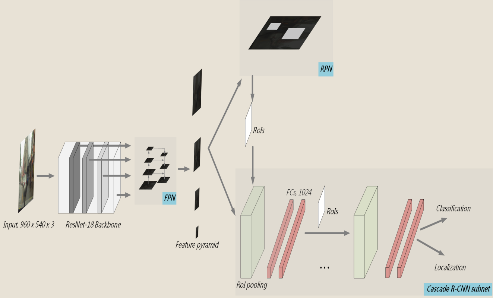

About
I am a graduate student at University of Wisconsin–Madison.
My research interests lie in the field of machine learning and computer vision.
I've been fortunate to work with really great people along the way. This summer (2021), I was a research intern at NEC Labs America , working with Farlay Lai and Asim Kadav. At Academia Sinica, I was a research assistant working with Chu-Song Chen. I graduated from National Tsing Hua University with an M.S. in Computer Science, where I was advised by Jia-Shung Wang.
More details, please see my CV (updated: September 2021).
I've been fortunate to work with really great people along the way. This summer (2021), I was a research intern at NEC Labs America , working with Farlay Lai and Asim Kadav. At Academia Sinica, I was a research assistant working with Chu-Song Chen. I graduated from National Tsing Hua University with an M.S. in Computer Science, where I was advised by Jia-Shung Wang.
More details, please see my CV (updated: September 2021).
Publications
Merging Well-Trained Deep CNN Models for Efficient Inference
Asia-Pacific Signal and Information Processing Association Annual Summit and Conference (APSIPA), 2020

IMMVP: An Efficient Daytime and NighttimeOn-Road Object Detector
IEEE International Workshop on Multimedia Signal Processing (MMSP), 2019

Traffic pattern modeling, trajectory classification
and vehicle tracking within urban intersections
IEEE International Smart Cities Conference (ISC2), 2017
Work Experience
NEC Labs America
May 2021 - Aug. 2021
Princeton, NJ

Academia Sinica
Mar. 2018 - Aug. 2020
Taipei, Taiwan

MediaTek Inc.
Mar. 2017 - Mar. 2018
Hsinchu, Taiwan
Realtek Inc.
Dec. 2016 - Mar. 2017
Hsinchu, Taiwan
GOTrust Technology Inc.
Jan. 2014 - Jun. 2014
Taichung, Taiwan